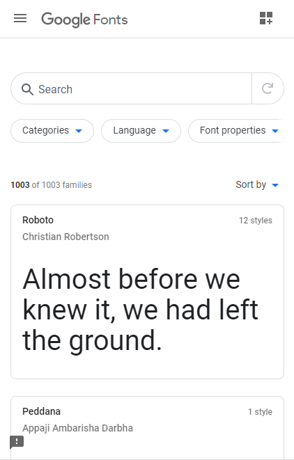

Clean Design
Google Fonts API
The Google Fonts API makes good use of white space, resulting in a clean look. The spacing between all of the components allows visitors to the page to remain calm while browsing for a typeface.
The clean style is primarily due to the fact that all of the fonts are separated into boxes with spacing between them, which just makes it more straightforward.
Rule of Thirds
Brigham Young University - Idaho

The image at the bottom of the screenshot adheres to the "Rule of Thirds," with the focal point (the woman's face) off to the right and the text (another focal point) off to the left.
When images and text are aligned in this manner, it makes it simpler to notice the focus of the image while also being able to read the text, which is probably why both elements were placed on the page.
Alignment
GitHub

The six logos at the bottom are aligned (in pairs) vertically and horizontally, making it straightforward and easy to interpret. All of the items on the page are horizontally centered, creating a reading direction.
Alignment is undoubtedly one of the most significant aspects of design principles. Alignment can be used to accomplish practically all of the other ideas/concepts. If you know how to employ alignment strategies correctly, it will improve the appearance of your page.